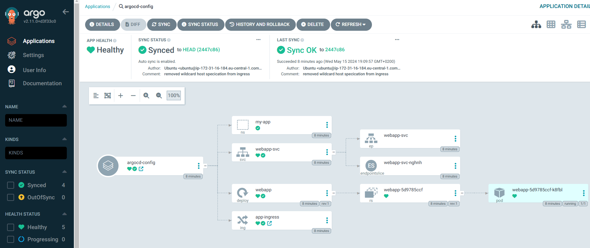
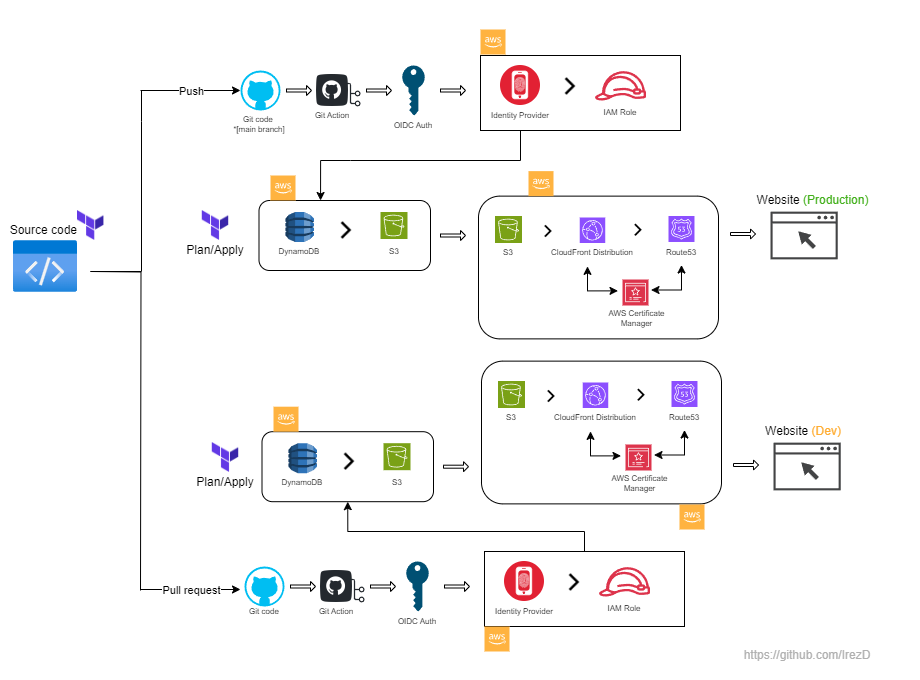
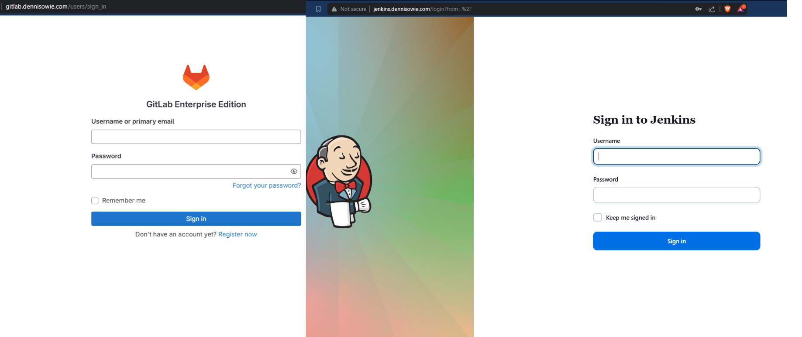

DevOps Projects

This category includes projects where I have implemented CI/CD pipelines, automated installation & configuration process with Bash scripting, developed Infrastructure as Code (IaC), worked extensively with Kubernetes and containerization.
EKS Cluster with ArgoCD
Deployed an application with Kubernetes (EKS) which is Amazon's Elastic Kubernetes Service (EKS) to manage and run containerized applications. I also integrated EKS with ArgoCD, a continuous delivery tool for Kubernetes to automate deployment process.
This setup allows for continuous and automated deployment within the cluster. Changes made to the application's Git repository will automatically trigger ArgoCD to deploy the updated application to the EKS cluster.
Project Link
Website Hosted on AWS with CI/CD Pipeline (GitHub Actions)
The objective of this project is to set up the deployment of a static website on AWS, utilizing Infrastructure as Code (IaC) through Terraform. Also aiming to establish a seamless CI/CD pipeline using GitHub Actions. Changes will be staged for code testing and review, with the final deployment to live production requiring a 'Push' to the main branch after changes have been validated on a working branch. Additionally, the project adheres to cloud security best practices, implementing the principle of least privilege by assigning only the necessary policies to the IAM Role for the workflow, ensuring secure provisioning of resources.
Project Link
Jenkins and GitLab instance Behind NGINX on EC2 Ubuntu Server
This project involves deploying a Jenkins server and a GitLab instance on an Amazon EC2 Ubuntu server, with Nginx configured as a reverse proxy. This setup allows for a single entry point to access both GitLab and Jenkins instance. Space space was also created on the Linux Server to accommodate both services to run smoothly.
Jenkins is installed as a Service on the Service, while GitLab is running as a Docker container. Bash script is used to automated the installation and configuration of both service. In addition, a basic Jenkins Pipeline was created to copy the latest code from the Git Repo to local directory using Jenkinsfile.
Project Link